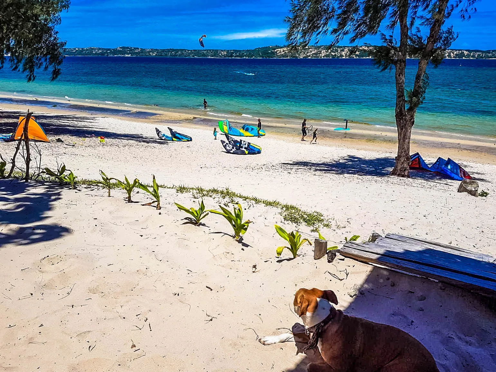
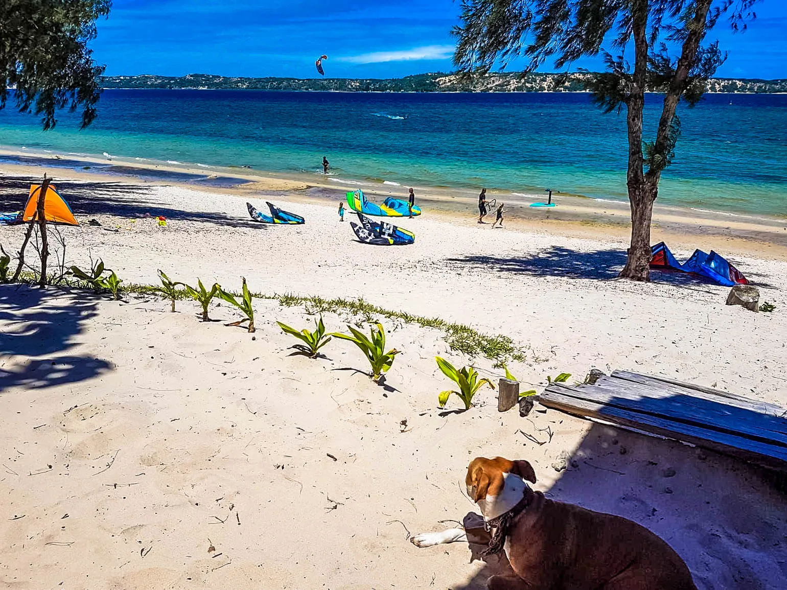
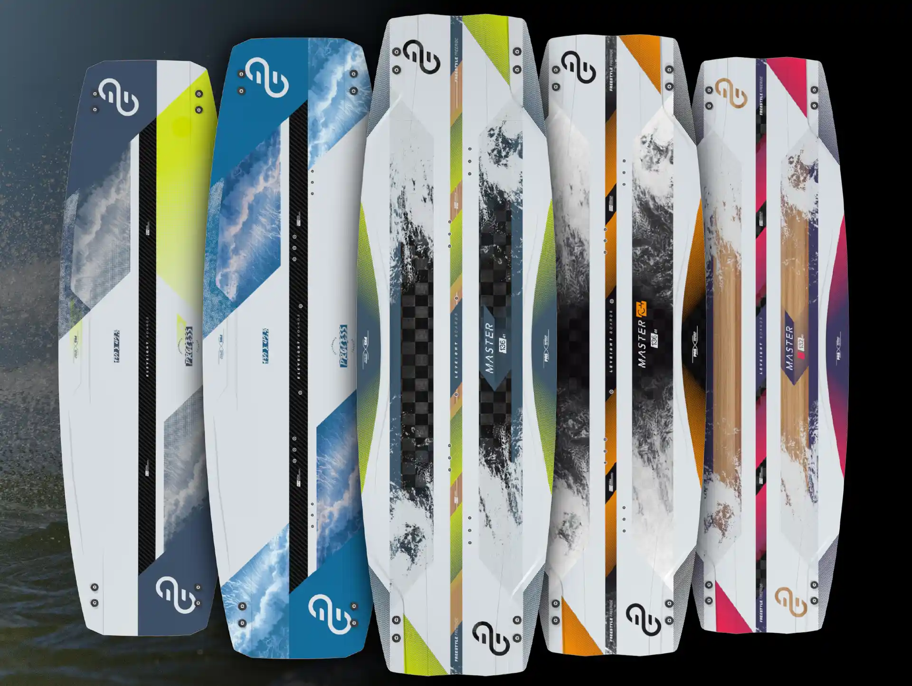
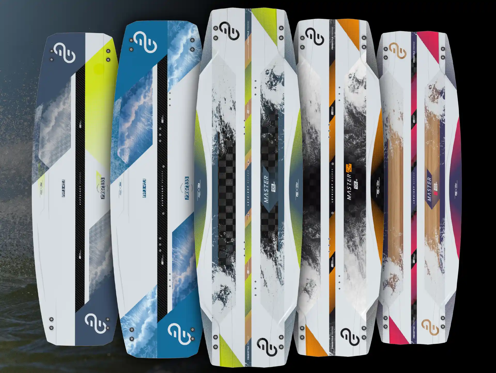

El Centro de kite
Todo para tu pasión
Centro de cometas Bilene
El centro se encuentra en la playa de Bilene. Está equipado con ducha, guardaropa y equipo, zona para endulzar el equipo, zona de secado, zona de frío, y por supuesto contiguo al Beach-bar del complejo hotelero Palmeiras. El centro está ubicado directamente en el pueblo, en una laguna clara y poco profunda, con acceso directo al Océano Índico, y con todas las comodidades del Complexo Palmeiras. Mas Info sobre Praia do Bilene.
 

Un entorno idílico para kitesurf y los deportes acuáticos
Ven y descubre el lugar perfecto, en un nuevo destino paradisíaco, lejos de los lugares masificados.

Bar-restaurante
El centro está situado dentro del Complexo Palmeiras, un lugar familiar, entre Restaurante y Chiringuito con vista directa a toda la laguna, bungalows equipados, casas de vacaciones, camping, tienda, wifi, y un personal muy acogedor y sonriente, el Palmeiras es uno de los primeros establecimientos de la laguna y más conocido en todo el sur de Mozambique. Más información: Complexo Palmeiras


Equipo Eleveight
Bilene Kite Center es socio de Eleveight, la marca de cometas de kitesurf que más está creciendo en los últimos años. Nuestro centro ofrece una gama completa de cometas, barras y tablas vintage nuevas, renovadas cada año. Desde 2022, contamos también con equipamiento para aprender y practicar wingsurf. Más información sobre Eleveight
 

Travesías, excursiones, speedspots, downwinds, viajes
Hay muchas áreas de agua perfectamente plana en la laguna, accesibles directamente desde el centro o en unos minutos en 4x4. Organizamos excursiones en barco con picnic para no perder ni un segundo de viento. La laguna es perfecta para largos paseos en kite en el magnífico escenario del África tropical. Finalizaremos nuestro recorrido en el mejor restaurante de mariscos de la laguna. Más información: las Palmeiras.


SUP Paddle
El centro ofrece toda una gama de SUP para explorar la laguna. Si te gusta madrugar, podrás disfrutar de la laguna como un verdadero espejo, antes de que el viento se asiente para el resto del día. Ofrecemos clases, alquileres o viajes organizados con nuestro instructor en este increíble paisaje africano.